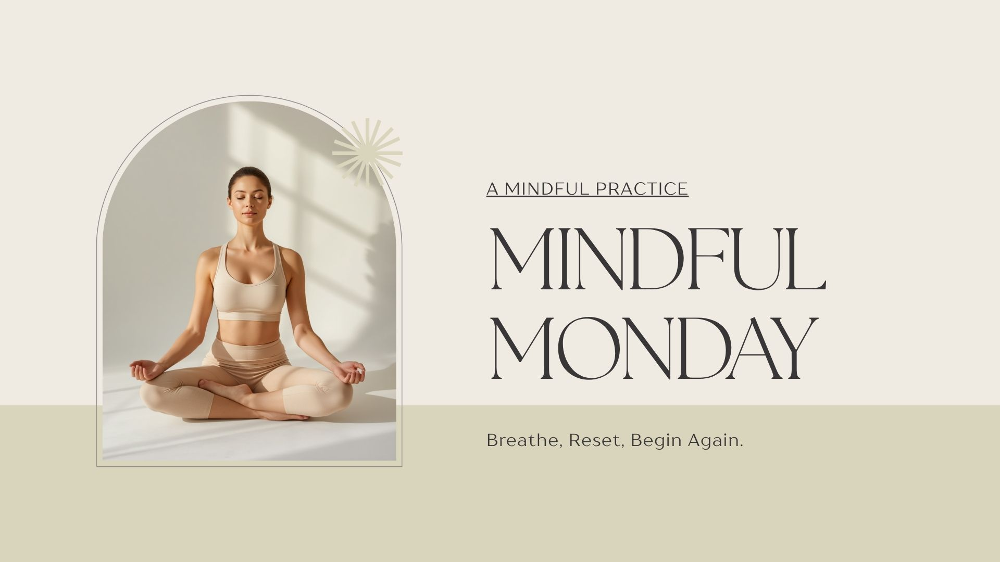

Mindful Monday: Breathe, Reset, Begin Again
A gentle reminder to slow down and reconnect with yourself.
Mondays often come with a rush of expectations. New tasks, busy schedules, responsibilities, and the pressure to start the week perfectly can leave us feeling overwhelmed before the week even begins.
But what if Monday didn't have to be a day of stress and catching up?
What if Monday could become a moment to pause, breathe, and intentionally choose how you want to move through the week?
🌿 Your Mindful Monday Reminder
You do not have to have everything figured out today.
Take a breath. Reset. Begin again.
What Is Mindfulness?
Mindfulness is the practice of bringing your attention to the present moment with curiosity and compassion.
It means noticing your thoughts, feelings, and surroundings without immediately judging them or needing to change them.
Mindfulness doesn't require a perfect routine or hours of meditation. It can happen in small moments throughout your day.
A Simple Monday Reset
Try this five-minute reset to start your week with intention:
- 🌿 Take three slow, deep breaths.
- 🌿 Notice one thing you can see, hear, and feel.
- 🌿 Ask yourself: "What do I need today?"
- 🌿 Choose one small intention for the week.
- 🌿 Offer yourself kindness instead of pressure.
Your Weekly Intention
Instead of creating a long list of things you need to accomplish, try choosing a feeling you want to cultivate.
Maybe this week you want to feel:
- Calm
- Present
- Confident
- Rested
- Connected
"Small moments of mindfulness create space for bigger moments of peace."
Cozy Reset Reflection
Take a few quiet moments and journal:
- What do I need more of this week?
- What can I gently release?
- How can I show myself compassion today?
- What is one small thing I can do to support my well-being?
💛 Your Monday Reset Ritual
Light a candle.
Make your favorite drink.
Open your journal.
Take a few moments to breathe and begin again.
Explore Self-Care ToolsRemember
You don't have to start the week perfectly.
You only have to start where you are.
One breath. One moment. One cozy reset at a time.